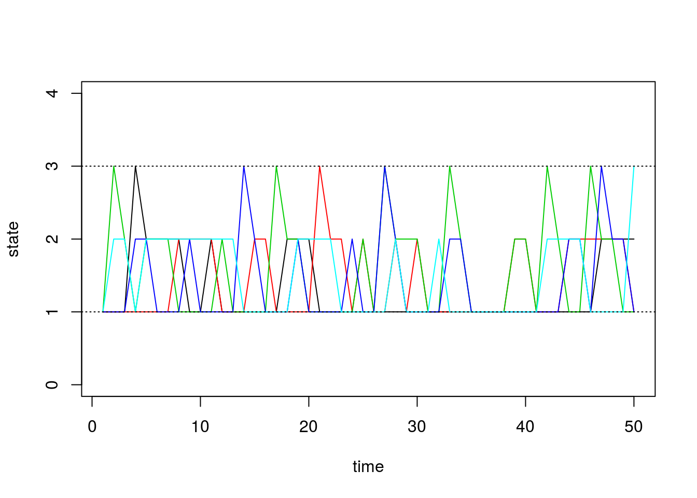
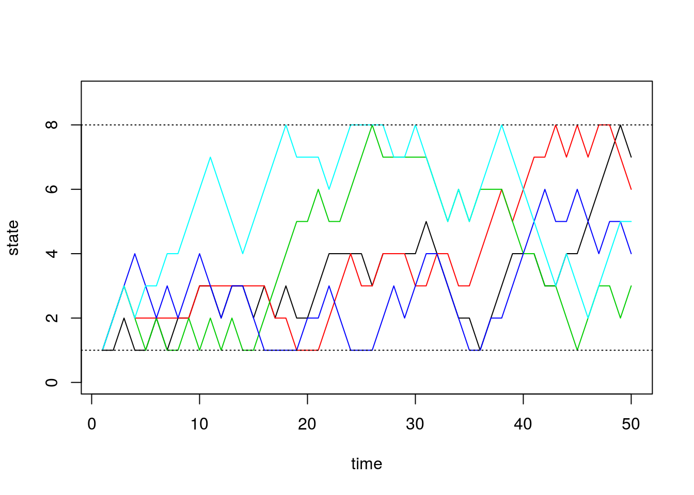
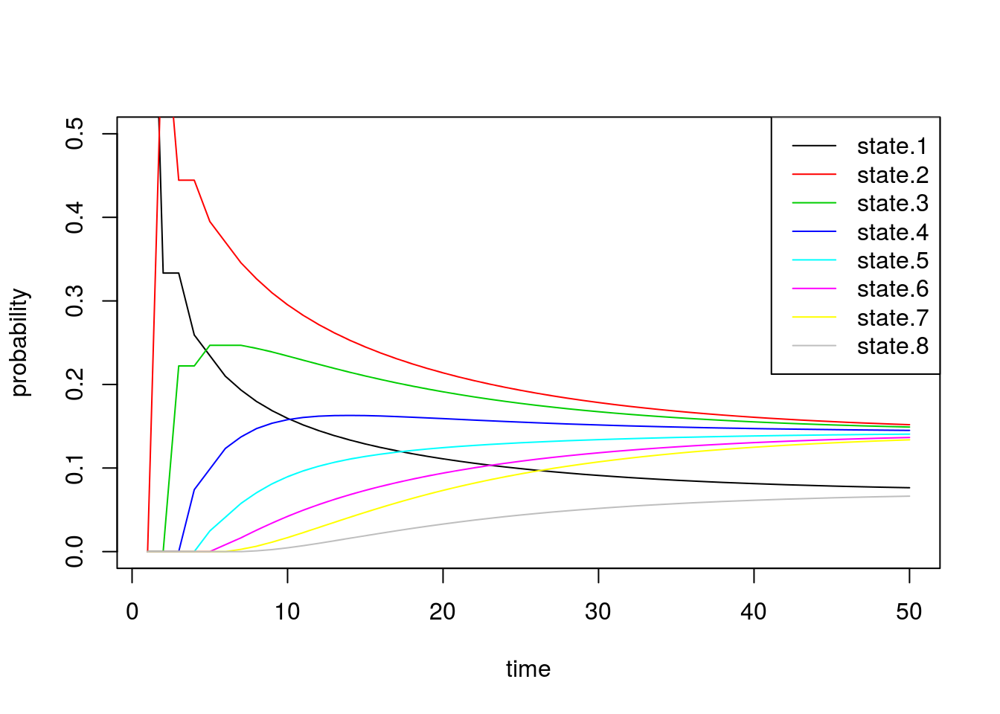
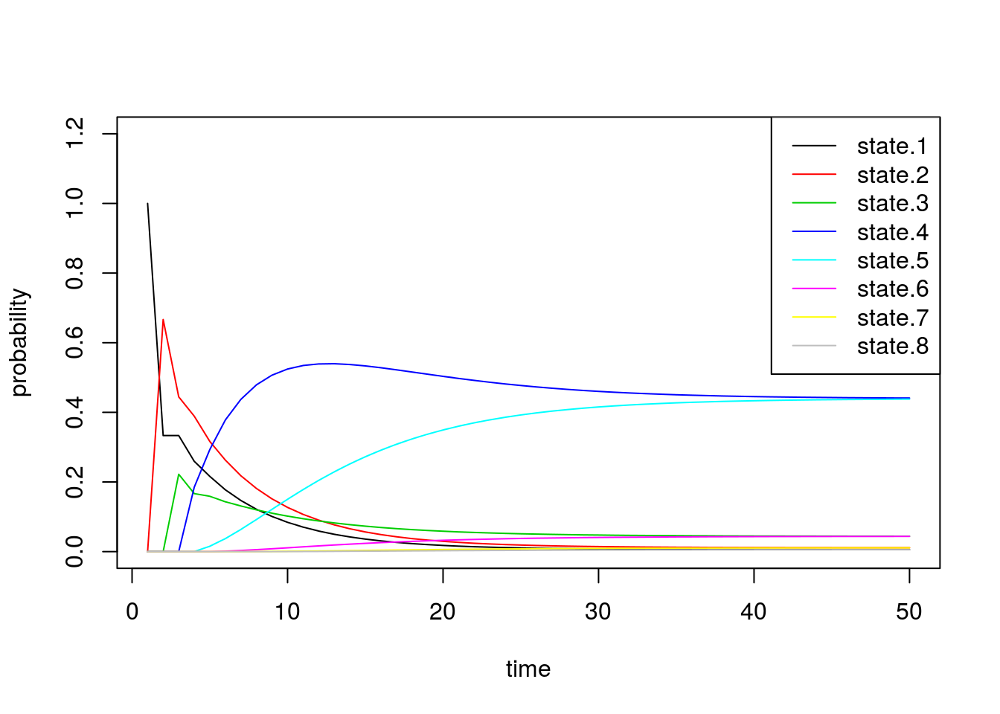
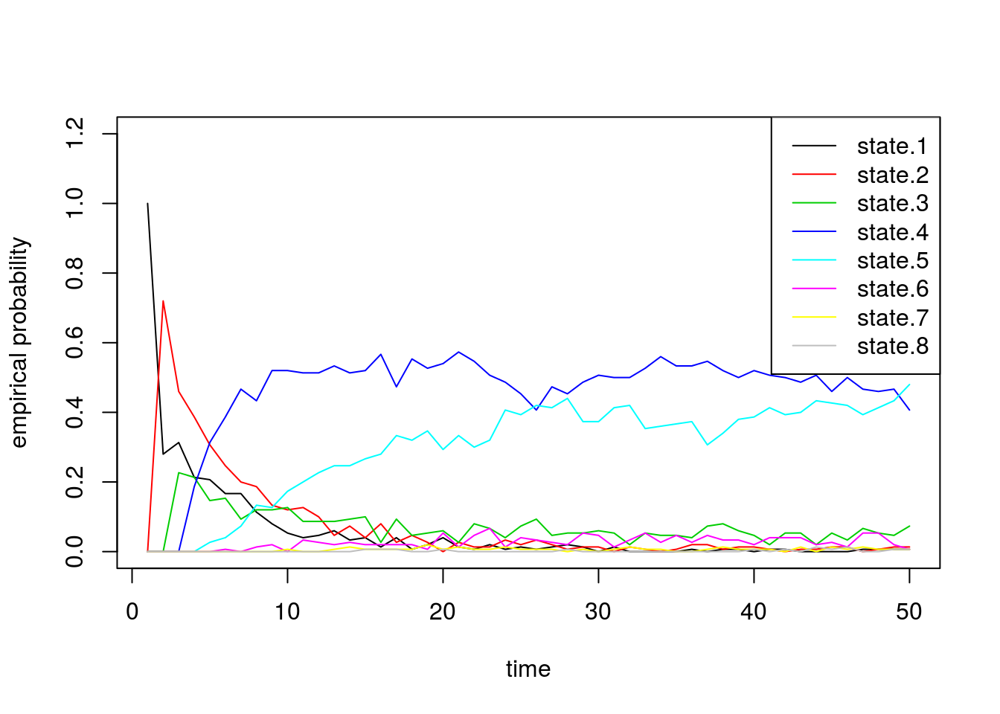

Simulating Discrete Markov Chains: Limiting Disributions
Matt Bonakdarpour
2016-01-21
Last updated: 2017-03-06
Code version: c7339fc
Pre-requisites
This document assumes basic familiarity with simulating Markov chains, as seen here: Simulating Discrete Markov Chains: An Introduction.
Overview
In this note, we show the empirical relationship between the stationary distribution, limiting probabilities, and empirical probabilities for discrete Markov chains.
Limiting Probabilities
Let \(\pi^{(0)}\) be our initial probability vector. For example, if we had a 3 state Markov chain with \(\pi^{(0)} = [0.5, 0.1, 0.4]\), this would tell us that our chain has a 50% probability of starting in state 1, a 10% probability of starting in state 2, and a 40% probability of starting in state 3. If we wanted to have our initial state equal to 1, we would set \(\pi^{(0)} = [1, 0, 0]\).
Let \(P\) be our probability transition matrix. Recall that the probability vector after \(n\) steps is equal to: \[\pi^{(n)} = \pi^{(0)}P^n\] where \(P^n\) is the matrix \(P\) raised to the \(n\)-th power.
With the facts above, we could keep track of our probability vector \(\pi^{(n)}\) as we simulate the Markov chain as follows:
- Obtain probability transition matrix \(P\)
- Set \(P_n = P\)
- For t = 1…T:
- Simulate next step of Markov chain.
- Set \(\pi^{(n)} = \pi^{(0)}P_n\)
- Set \(P_n = P_nP\)
We augment our function for simulating Markov chains from this note with the following changes:
1. We keep track of \(\pi^{(n)}\).
2. We add the functionality of simulating multiple chains at once – as a result, the vectors we dealt with in the previous note have turned into matrices.
3. We use the rmultinom() function instead of our inv.transform.sample() method.
# simulate discrete Markov chains
run.mc.sim <- function( P, # probability transition matrix
num.iters=50,
num.chains=150 )
{
# number of possible states
num.states <- nrow(P)
# states X_t for all chains
states <- matrix(NA, ncol=num.chains, nrow=num.iters)
# probability vectors pi^n through time
all_probs <- matrix(NA, nrow=num.iters, ncol=num.states)
# forces chains to start in state 1
pi_0 <- c(1, rep(0, num.states-1))
# initialize variables for first state
P_n <- P
all_probs[1,] <- pi_0
states[1,] <- 1
for(t in 2:num.iters) {
# pi^n for this iteration
pi_n <- pi_0 %*% P_n
all_probs[t,] <- pi_n
for(chain_num in seq_len(num.chains)) {
# probability vector to simulating next state
p <- P[ states[t-1,chain_num], ]
states[t,chain_num] <- which(rmultinom(1, 1, p) == 1)
}
# update probability transition matrix
P_n <- P_n %*% P
}
return(list(all.probs=all_probs, states=states))
}Simulation 1: 3x3 example
Assume our probability transition matrix is: \[P = \begin{bmatrix} 0.7 & 0.2 & 0.1 \\ 0.4 & 0.6 & 0 \\ 0 & 1 & 0 \end{bmatrix}\]
We initialize this matrix in R below:
# setup transition matrix
P <- t(matrix(c( 0.7, 0.2, 0.1,
0.4, 0.6, 0,
0, 1, 0 ), nrow=3, ncol=3))We will inspect the limiting probabilities and compare them to the stationary distribution. In this note, we derived the stationary distribution for this transition matrix. Recall that the stationary distribution \(\pi\) is the vector such that \[\pi = \pi P\]
We found that: \[\begin{align*} \pi_1 \approx 0.54, \pi_2 \approx 0.41, \pi_3 \approx 0.05 \end{align*}\]
Therefore, with proper conditions (see below), we expect the Markov chain to spend more time in states 1 and 2 as the chain evolves.
Now we will use the function we wrote in the previous section to check this result numerically.
sim1 <- run.mc.sim(P)Our function returns a list containing two matrices. The second matrix called “states” contains the states of each of our simulated chains through time. Recall that our state space is \(\{1,2,3\}\). Below, we first visualize how 5 of these chains evolve:
states <- sim1[[2]]
matplot(states[,1:5], type='l', lty=1, col=1:5, ylim=c(0,4), ylab='state', xlab='time')
abline(h=1, lty=3)
abline(h=3, lty=3)
The first matrix we get from our function contains \(\pi^{(n)}\) through time. We can see how \(\pi^{(n)}\) evolves as \(n\) grows, and we can check if it converges to the stationary distribution we found above. For irreducible finite state Markov chains, note that \(\pi^{(n)}\) converges if and only if the Markov chain is aperiodic. In this note, we only consider finite, irreducible, and aperiodic Markov chains.
Using \(\pi^{(n)}\), we plot the time evolution of the probability of being in each state:
all.probs <- sim1[[1]]
matplot(all.probs, type='l', col=1:3, lty=1, ylab='probability', xlab='time')
legend('topright', c('state.1', 'state.2', 'state.3'), lty=1, col=1:3)Indeed, we see that these probabilities quickly converge. Just by looking at the plot, we can see that the final probabilities are about equal to the stationary distribution \(\pi\) we found above.
By inspecting the actual values, we confirm that the values of \(\pi^{(n)}\) converge to the vector \(\pi\) exactly. The first row in the matrix below is from the simulation, and the second row is the quantity we obtained by solving for the stationary distribution:
# solve for stationary distribution
A <- matrix(c(-0.3, 0.2, 0.1, 1, 0.4, -0.4, 0, 1, 0, 1, -1, 1 ), ncol=3,nrow=4)
b <- c(0,0,0, 1)
pi <- drop(solve(t(A) %*% A, t(A) %*% b))
# show comparison
results1 <- t(data.frame(pi_n = all.probs[50,], pi = pi))
colnames(results1) <- c('state.1', 'state.2', 'state.3')
results1 state.1 state.2 state.3
pi_n 0.5405405 0.4054054 0.05405405
pi 0.5405405 0.4054054 0.05405405Finally, we can also plot the proportion of chains that are in each state through time. These should roughly equal the probability vectors above, with some noise due to random chance:
state.probs <- t(apply(apply(sim1[[2]], 1, function(x) table(factor(x, levels=1:3))), 2, function(x) x/sum(x)))
matplot(state.probs[1:50,], col=1:3, lty=1, type='l', ylab='empirical probability', xlab='time')
legend('topright', c('state.1', 'state.2', 'state.3'), lty=1, col=1:3)
Simulation 2: 8x8 example
Next we will quickly do two larger experiments with the size of our state space equal to 8. Assume our probability transition matrix is: \[P = \begin{bmatrix} 0.33 & 0.66 & 0 & 0 & 0 & 0 & 0 & 0 \\ 0.33 & 0.33 & 0.33 & 0 & 0 & 0 & 0 & 0 \\ 0 & 0.33 & 0.33 & 0.33 & 0 & 0 & 0 & 0 \\ 0 & 0 & 0.33 & 0.33 & 0.33 & 0 & 0 & 0 \\ 0 & 0 & 0 & 0.33 & 0.33 & 0.33 & 0 & 0 \\ 0 & 0 & 0 & 0 & 0.33 & 0.33 & 0.33 & 0 \\ 0 & 0 & 0 & 0 & 0 & 0.33 & 0.33 & 0.33 \\ 0 & 0 & 0 & 0 & 0 & 0 & 0.66 & 0.33 \\ \end{bmatrix}\]
We first initialize our transition matrix in R:
P <- t(matrix(c( 1/3, 2/3, 0, 0, 0, 0, 0, 0,
1/3, 1/3, 1/3, 0, 0, 0, 0, 0,
0, 1/3, 1/3, 1/3, 0, 0, 0, 0,
0, 0, 1/3, 1/3, 1/3, 0, 0, 0,
0, 0, 0, 1/3, 1/3, 1/3, 0, 0,
0, 0, 0, 0, 1/3, 1/3, 1/3, 0,
0, 0, 0, 0, 0, 1/3, 1/3, 1/3,
0, 0, 0, 0, 0, 0, 2/3, 1/3), nrow=8, ncol=8))After briefly studying this matrix, we can see that for states 2 through 7, this transition matrix forces the chain to either stay in the current state or move one state up or down, all with equal probability. For the edge cases, states 1 and 8, the chain can either stay or reflect towards the middle states. Since it’s “easier” to get to one of the middle states (either from above or below), we should see that the probabilities for these states converge to a higher number than the states on the boundaries.
Now we run our simulation with the transition matrix above:
sim2a <- run.mc.sim(P)and now plot 5 of the chains through time below:
states <- sim2a[[2]]
matplot(states[,1:5], type='l', lty=1, col=1:5, ylim=c(0,9), ylab='state', xlab='time')
abline(h=1, lty=3)
abline(h=8, lty=3)
Next we inspect \(\pi^{(n)}\) through time:
all.probs <- sim2a[[1]]
matplot(all.probs, type='l', col=1:8, lty=1, ylab='probability',
xlab='time', ylim=c(0, 0.5))
legend('topright', paste('state.', 1:8, sep=''), lty=1, col=1:8) These results match our intuition above. The probability of being in states 1 and 8 converge to smaller values than the others.
Now we alter the transition matrix above to encourage the chain to stay in states 4 and 5: \[P = \begin{bmatrix} 0.33 & 0.66 & 0 & 0 & 0 & 0 & 0 & 0 \\ 0.33 & 0.33 & 0.33 & 0 & 0 & 0 & 0 & 0 \\ 0 & 0.08 & 0.08 & 0.84 & 0 & 0 & 0 & 0 \\ 0 & 0 & 0.08 & 0.84 & 0.08 & 0 & 0 & 0 \\ 0 & 0 & 0 & 0.08 & 0.84 & 0.08 & 0 & 0 \\ 0 & 0 & 0 & 0 & 0.84 & 0.08 & 0.08 & 0 \\ 0 & 0 & 0 & 0 & 0 & 0.33 & 0.33 & 0.33 \\ 0 & 0 & 0 & 0 & 0 & 0 & 0.66 & 0.33 \\ \end{bmatrix}\]
and initialize the transition matrix in R:
P <- t(matrix(c( 1/3, 2/3, 0, 0, 0, 0, 0, 0,
1/3, 1/3, 1/3, 0, 0, 0, 0, 0,
0, .5/6, .5/6, 5/6, 0, 0, 0, 0,
0, 0, .5/6, 5/6, .5/6, 0, 0, 0,
0, 0, 0, .5/6, 5/6, .5/6, 0, 0,
0, 0, 0, 0, 5/6, .5/6, .5/6, 0,
0, 0, 0, 0, 0, 1/3, 1/3, 1/3,
0, 0, 0, 0, 0, 0, 2/3, 1/3 ), nrow=8, ncol=8))sim2b <- run.mc.sim(P)Below we inspect \(\pi^{(n)}\) through time and see that the probability vector converges to a vector placing most of the probability mass on states 4 and 5.
all.probs <- sim2b[[1]]
matplot(all.probs, type='l', col=1:8, lty=1, ylab='probability',
xlab='time', ylim=c(0,1.2))
legend('topright', paste('state.', 1:8, sep=''), lty=1, col=1:8)
Finally we confirm that our empirical probabilities also exhibit similar behavior:
state.probs <- t(apply(apply(sim2b[[2]], 1, function(x) table(factor(x, levels=1:8))), 2, function(x) x/sum(x)))
matplot(state.probs[1:50,], col=1:8, lty=1, type='l', ylab='empirical probability', xlab='time', ylim=c(0,1.2))
legend('topright', paste('state.', 1:8, sep=''), lty=1, col=1:8)
Session information
sessionInfo()R version 3.3.2 (2016-10-31)
Platform: x86_64-pc-linux-gnu (64-bit)
Running under: Ubuntu 14.04.5 LTS
locale:
[1] LC_CTYPE=en_US.UTF-8 LC_NUMERIC=C
[3] LC_TIME=en_US.UTF-8 LC_COLLATE=en_US.UTF-8
[5] LC_MONETARY=en_US.UTF-8 LC_MESSAGES=en_US.UTF-8
[7] LC_PAPER=en_US.UTF-8 LC_NAME=C
[9] LC_ADDRESS=C LC_TELEPHONE=C
[11] LC_MEASUREMENT=en_US.UTF-8 LC_IDENTIFICATION=C
attached base packages:
[1] stats graphics grDevices utils datasets methods base
other attached packages:
[1] knitr_1.15.1 MASS_7.3-45 expm_0.999-0
[4] Matrix_1.2-8 workflowr_0.4.0 rmarkdown_1.3.9004
loaded via a namespace (and not attached):
[1] Rcpp_0.12.9 lattice_0.20-34 gtools_3.5.0 digest_0.6.12
[5] rprojroot_1.2 mime_0.5 R6_2.2.0 grid_3.3.2
[9] xtable_1.8-2 backports_1.0.5 git2r_0.18.0 magrittr_1.5
[13] evaluate_0.10 stringi_1.1.2 tools_3.3.2 stringr_1.2.0
[17] shiny_1.0.0 httpuv_1.3.3 yaml_2.1.14 htmltools_0.3.5This site was created with R Markdown